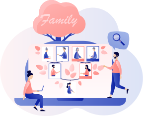

知ることで
“ 気づく” ( 築く )
あたたかい絆
知ることで
“ 気づく” ( 築く )
あたたかい絆


愛に包まれてこの世に生を受け
この世を去るときもきっと愛に包まれて旅立つ
人の数ある
その人だけの物語

質問を通してその物語を思い出し
紡ぎ出してみませんか？
聞かれなければ知りえない
あなただけのストーリー
もつれた糸をほどくことも
切れた糸を結び直すことも
より強く太い糸にすることも
今ならできる
親への100+1の質問
また家系図作成を通して
ともに過ごす時間は
今から未来に繋がる道を
輝かせる宝物になるはずです。
親（質問相手）を深く知ることを目的としたプロジェクトです。
自ら知りたいと歩み寄り、101個の質問をし答えていただくそのやり取りは、絆を再確認するための大切なプロセスです。
聞かなければ知り得ない、これまでの人生や価値観、交友関係、本心を知ることができ、 あなたと質問するお相手の「今」そして「これから」をより豊かなものにします。
知ることで気づく（築く）あたたかい絆をぜひ体験してください。
家系図製作 とは？
LIFE SIZE Designの家系図製作は、記録としての家系図ではなく、ご家族としてのつながりを感じられる家系図をご提案しています。 家系図はご先祖さまや自分が生きた証であり、過去（ご先祖様）・現在・未来（子孫）を繋ぐ大切な役割を果たします。 インタビューでわかる範囲での家系図製作はもちろん、行政書士による戸籍調査で過去にさかのぼることも可能です。

デザイン事務所だからこそご提案できる、飾れる家系図や持ち歩ける家系図、
ご先祖さまやご家族の写真やエピソードを盛り込んだデジタル家系図も魅力的です。
知ることで気づく（築く）あたたかい絆をぜひ体験してください。
このような方におすすめ
家とのつながりを感じたい
自分の存在を残したい
家族のエピソードを残したい
過去と未来を記録したい
自分のルーツを知りたい
家族が歩んできた道を知り、自分の価値観を作ってきたものがわかった。ありのままの自分でいいんだと思えた。
100＋1の質問で今を生きる家族のことを知り、家系図でご先祖さまとの大切に繋がれてきた命の尊さに感謝と喜びを感じた。
親より上の世代に遡ることで親を認め、許し、愛することができるようになりました。
自分や親、ご先祖様を大切に思う気持ちが強まりました。

100＋1の質問
家系図制作
インタビューの流れ、対面、
電話、オンラインなど形式は
どのようになりますか？
流れ、対面、電話、オンラインなどの形式の説明・・・・
1回のインタビューの所要時間
や、全体のインタビュー期間に
ついて教えてください。
流れ、対面、電話、オンラインなどの形式の説明・・・・
具体的な質問例や質問内容の
範囲について知りたいです。
流れ、対面、電話、オンラインなどの形式の説明・・・・
親が協力的でない場合の対応方
法について教えてください。
流れ、対面、電話、オンラインなどの形式の説明・・・・
インタビュー後の内容編集や校正
サービスについて知りたいで
流れ、対面、電話、オンラインなどの形式の説明・・・・
社名
株式会社LIFE SIZE ウェルネスデザイン事業
https://life-size.jp/
対応時間
平日１０:００ ~ １５:００
※土日・祝日は休業のため、土日・祝日にいただいたお問い合わせについては翌平日に回答をさせていただきます。ご了承くださいませ。
＼Googleフォームよりお問い合わせください／